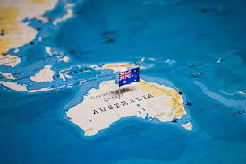

you want to visit australia then this will be good for you
Atralia and Aboriginal history of Western Australia Rock painting at Ubirr in Kakadu National Park. Evidence of Aboriginal art in Australia can be traced back some 30,000 years. Indigenous Australians are believed to have arrived in Australia 50,000 to 65,000 years ago.[2][3] They developed a hunter-gatherer lifestyle, established enduring spiritual and artistic traditions and used a range of technologies adapted to their environments. Recent estimates of the Indigenous population at the time of British settlement range from 500,000 to one million.[4][5] There is considerable archaeological discussion as to the route taken by the first colonisers. People appear to have arrived by sea during a period of glaciation, when New Guinea and Tasmania were joined to the continent; however, the journey still required sea travel, making them among the world's earliest mariners.[6] Scott Cane wrote in 2013 that the first wave may have been prompted by the eruption of Lake Toba. If they arrived around 70,000 years ago, they could have crossed the water from Timor, when the sea level was low, but if they came later, around 50,000 years ago, a more likely route would have been through the Moluccas to New Guinea. Given that the likely landfall regions have been under around 50 metres of water for the last 15,000 years, it is unlikely that the timing will ever be established with certainty.[7] The oldest known sites of human occupation in Australia are in Arnhem Land in the north of the continent and have been dated to between 50,000 and 65,000 BP. The population spread into a range of very different environments. Devil's Lair in the extreme south-west of the continent was occupied around 47,000 BP and Tasmania by 39,000 BP.[8] The earliest known human remains in Australia were found at Lake Mungo, a dry lake in the southwest of New South Wales, and are about 40,000 years old.[9] Remains found at Mungo suggest one of the world's oldest known cremations, thus indicating early evidence for religious ritual among humans.[10]
